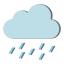
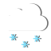

5 Day Forecast for Preston
Monday
Rain
Tuesday
Snow
Wednesday
Sunny
Thursday

Cloudy
Friday

Thunderstorms
currently: Sunny
High: 76 ℉
Wind Chill: ℉
Humidity: 69%
Wind Speed: 5mph
Rain
Snow
Sunny
Cloudy
Thunderstorms
While crossing paths with a mountain lion is out of the ordinary, there
seem to be a few encounters in southeast Idaho every year. This causes some
concern when sightings occur near homes, businesses, or recreation areas.
If you happen to encounter a mountain lion here are some safety tips to remember:
First, do not run or turn your back on the mountain lion. Instead, stand your ground,
and make yourself appear as large and strong as possible. Raise your arms over your
head and wave them. Yell or shout. Throw objects or items at the mountain lion.
Typically mountain lions will run off. In the rare instance that a mountain lion attacks,
fight back! You should never approach a mountain lion or offer it food.
If you observe a mountain lion or signs of a mountain lion near your
home, business or public recreation area, contact the
Idaho Department of Fish and Game.